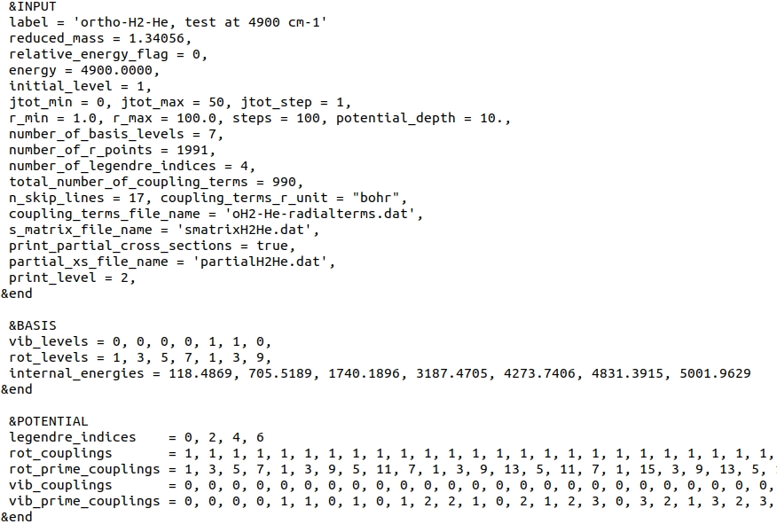
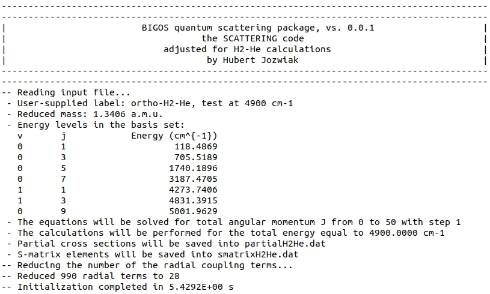
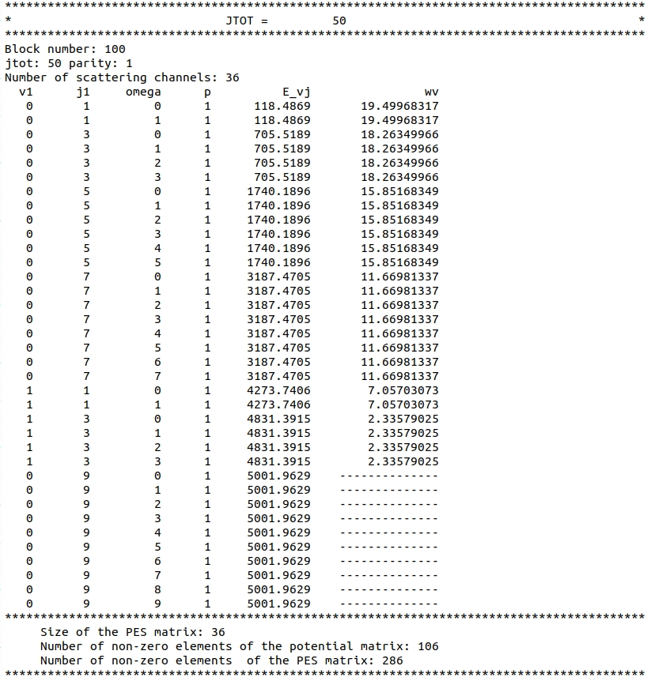
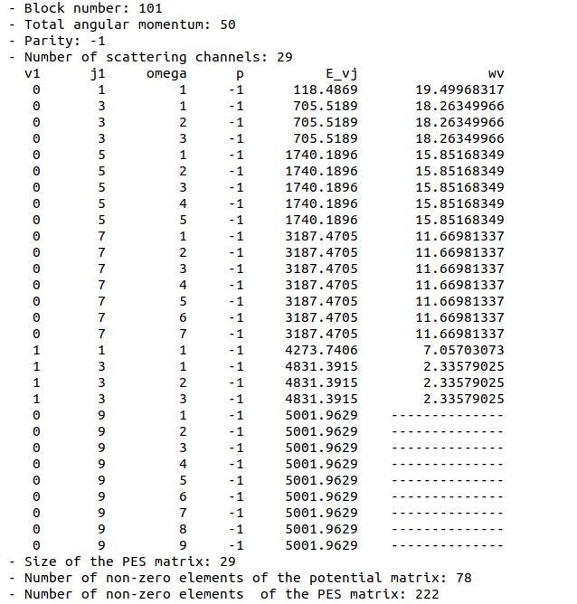
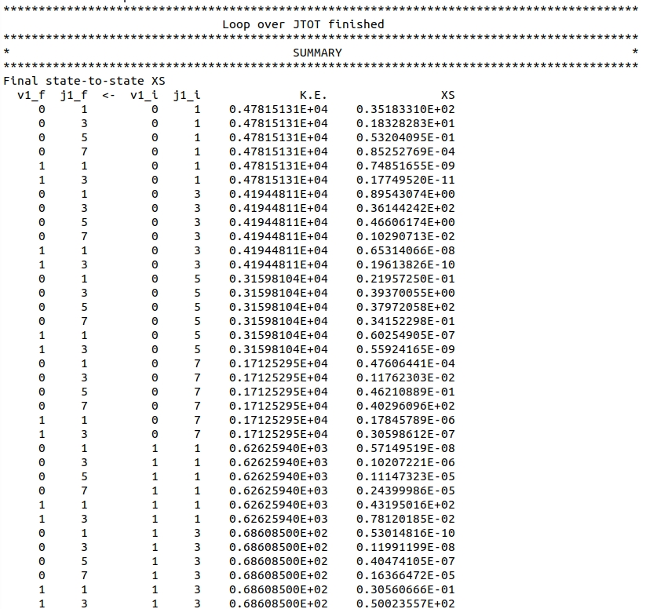

The input file can be found here.
Below, we provide the screenshot of this file.

Here, we choose to define collision energy through total energy by setting relative_energy_flag to 0: variable energy is thus interpreted as the total energy.
In this test, we fix the range of total angular momenta by setting jtotmin to 0 and jtotmax to 50. Is this enough to converge the cross-sections with respect to \(J\) to, let's say, the level of \(10^{-2} Å^{2}\)? Let's find out.
The basis in this test covers only nlevel = 7 rovibrational levels. Note that the energy of only one of these states, \(v=0, j=9\), is higher than the total energy of the collision system, meaning only one level in the basis is closed. This might be too low, but the test here is supposed to just present basic capabilities of the code.
Vibrational and rotational quantum numbers, as well as corresponding internal energies of these levels are provided in the BASIS Namelist, through v1array, j1array and elevel arrays.
The next 6 variables provide information about the radial coupling terms file, and where already discussed in the Elastic scattering test. Note that we keep the same name for S-matrix and partial state-to-state cross-sections files.
Since we use exactly the same radial coupling terms file, namelist POTENTIAL provides the exact same variables as in the previous test.
The output file can be found here.
Input parameters are summarized at the beginning of the file:

Note that out of the 990 coupling terms provided in the 'oH2-He-radialterms.dat' file, only 28 terms were actually used in the calculations (see reduce_radial_coupling_terms procedure).
The number 28 stems from the fact that we have 7 levels in the basis.
There are 49 \( (v,j) \leftrightarrow (v',j') \) couplings possible, but the coupling terms (see Eq. (2) here) are symmetric with respect to the change of \( (v,j) \), and \( (v',j') \).
This limits the number of unique coupling terms to \( (7 \cdot 8) / 2 = 28\).
The information about each block is presented in the same way as in the previous example. Let's have a look at the last \(J\) block. The block comprises of 2 parity sub-blocks. The first one involves 36 scattering channels:

Note that the last 10 are closed - their energy is higher than the total energy of the system. All these 10 channels stem from the \(v=0, j=9\) basis level that we provided in the Input file.
The information at the bottom presents how much computational time and memory we save by using the body-fixed representation.
Since we have 36 channels, the coupling matrix should have \(36 \cdot 36 = 1296\) elements.
Most of them stem from the contribution from the interaction potential - see Eq. (1) here.
In the body-fixed frame, however, a lot of these elements are zero - since the PES does not couple different values of the projection of the rotational angular momentum on the body-fixed Z-axis, \(\bar{\Omega}\), as indicated by the Kronecker delta in Eq. (3) in the "Coupling Matrix" section.
So how much matrix elements of the PES contribution are non-zero?
This is written in the output file: only 106 out of 1296.
Note that each of these 106 terms involves a sum over \(\lambda\) (see Eq. (1) here).
In the H2-He case, if all elements of the sum for all non-zero matrix elements were non-zero, we would have to store \(106 \cdot 4 = 424\) algebraic coefficients \( g_{{\lambda},\gamma,\gamma'}^{Jp} \) for this block.
This is, however, not the case, as lots of algebraic coefficients vanish due to symmetry properties of the 3-j symbols.
Ultimately, we need to save only 286 algebraic coefficients.
Let's scroll down to the information about the other parity sub-block at \(J=50\): .
This block is slightly smaller - it involves 29 channels.
This is because, in atom-molecule collisions, \(\bar{\Omega} = 0\) channels enter only blocks for which the \(p=(-1)^{J}\) block.
For a detailed discussion see Sec. III of the paper by Alexander and DePristo.
Below the summary of the propagation and unitary check of the S-matrix, we find the following information: .
This short summary tells us that the largest contribution to the elastic cross-sections from the \(J=50\) block is \(0.033 Å^{2}\).
Comparing it to the total value of the largest elastic cross-section, \(\sigma = 50.024 Å^{2}\), we can say that the contribution is smaller than 0.1%, and thus terminate the calculations. Sometimes, however, we can set a more stringent threshold on the contribution to the cross-sections, as we did in the previous test.
The largest inelastic cross-section was modified by \(\approx 5.7 \times 10^{-4} Å^{2} \). To say that it's enough depends on the context.
Here, the largest inelastic cross-section is \(\sigma = 1.8328 Å^{2}\), thus this level of convergence might be satisfactory.
Note that inelastic cross-sections converge faster than elastic counterparts.
The end of the file provides a list of all state-to-state cross-sections calculated in this run: .
In addition to the output file, the calculations produce a file containing partial state-to-state cross-sections, which is available here, and the binary S-matrix file here. The latter one needs a post-processor to read and interpret the saved data.